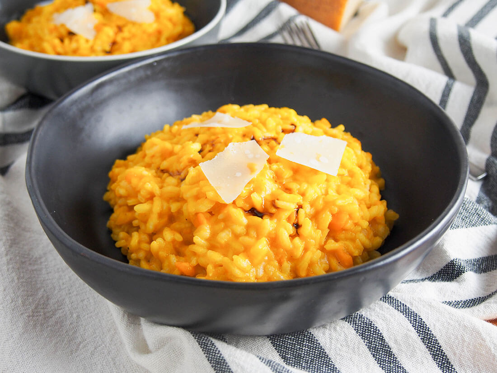

Pumpkin Risotto
Recipe source

Description by ChatGPT
Pumpkin risotto is a comforting dish made with rice, pumpkin, and stock.
The rice is cooked slowly, absorbing the flavors of the pumpkin and broth, creating a creamy texture.
It’s often seasoned with simple ingredients like garlic, onion, and Parmesan cheese.
The dish is easy to make by cooking the pumpkin with the rice and adding stock bit by bit.
Once the rice is tender, the risotto is ready to serve.
It’s a warm and mild meal that’s perfect for cooler weather.
Ingredients
- 1 pumpkin
- 1 Onion
- 3 cloves garlic
- 15 ml olive oil
- 14 g utter
- 300 g arborio rice
- 720 ml light stock
- 20 g nutritional yeast flakes
- 1 pinch nutmeg
- 1 pinch pepper
- 5 ml balsamic vinegar
Steps
- Preheat oven to 180 degrees Celsius.
- Slice the pumpkin in half and de-seed it.
- Apply cooking oil to both halves and lay the halves with the sliced side down on a tray.
- Pierce the skin a few times with a fork or knife to let steam escape.
- Bake the pumpkin for 45 minutes.
- Scoop the squash and put it in a bowl.
- Warm the oil and butter in a medium pan over a medium heat then add the onion. Cook for around 5 minutes until the onion softens, but make sure it doesn't brown (reduce heat or add a little more butter, if needed).
- Add the garlic and pumpkin/squash and cook a few more minutes until it all softens (around another 5, but depends on the kind of squash/pumpkin and size of pieces). Often this works best by covering the pan with a lid to let the vegetables sweat. Mash the pumpkin/squash so that it's a rough puree.
- Add the rice and cook for a minute or two then add enough stock to cover the rice. Keep adding a little more stock (around ½ to 1 cup at a time) as the previous amount is absorbed, stirring now and then so that it doesn't stick. Typically, it doesn't need stirred much to start but more towards the end.
- Once the rice is cooked and the stock has been absorbed, stir through the parmesan, nutmeg and pepper. Adjust seasoning to taste. Serve topped with a drizzle of aged balsamic and a few shaves of parmesan.
Home